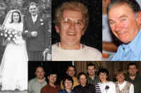

|

GÉRARD CHARETTE
LA ONZIÈME GÉNÉRATION AU QUÉBEC
UN HOMME DE LA RÉVOLUTION TRANQUILLE
Né le 19 octobre 1921 à Montréal,
Gérard est toute sa vie un homme de son temps.
Il est de la génération de ceux et celles qui font la révolution
tranquille pour assurer à leurs enfants une vie meilleure et, au Québec, une ouverture sur le monde.
Gérard s'engage dans les nouveaux mouvements de société, souvent dès
leurs débuts. Que ce soit le droit et l'importance de l'éducation pour
tous, filles autant que garçons, le
mouvement indépendantiste du début des années 1960, la tendance
santé comme la naturopathie, l'homéopathie, les aliments naturels, le
jeûne thérapeutique, etc...
Gérard aime conduire tout ce qui roule sur quatre roues, voitures,
taxis, camions, citerne ou remorque, il participe à des concours
d'adresse, des rallyes. Il aime bouger, rencontrer plein de gens, faire partie
de groupes ou d'associations de tous genres, suivre des cours, changer d'emploi, avoir
toujours un ou deux emplois à temps partiel, en plus de son travail régulier. Ce
dernier étant souvent "sur des chiffres", Gérard ne connaît
pas un sommeil et une vie régulière, et ce pendant longtemps.


Gérard participe à la fin de la deuxième guerre
mondiale en Europe.
Démobilisé au printemps 1946,
il épouse le 29 juin, Jacqueline Consigny. Ils ont neuf enfants.
|